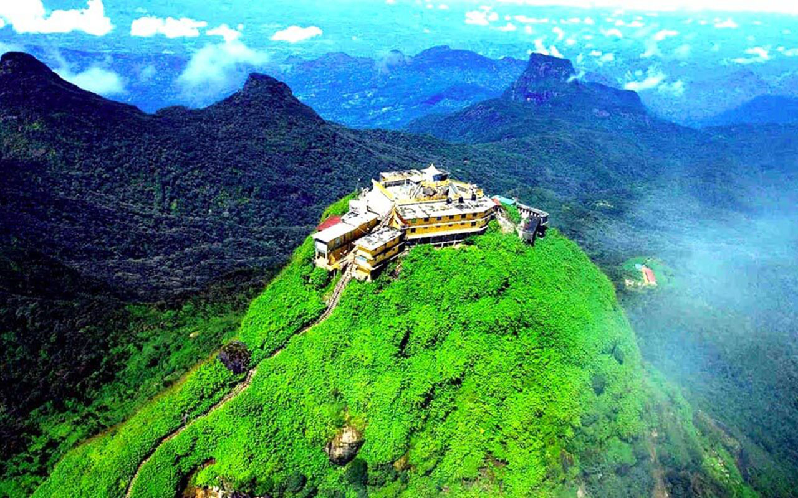
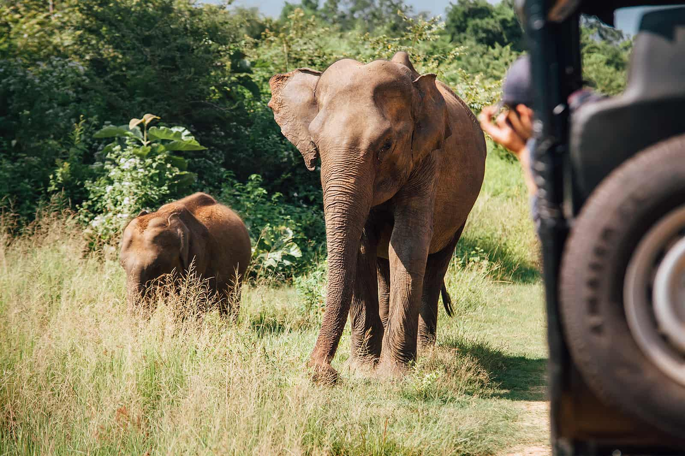
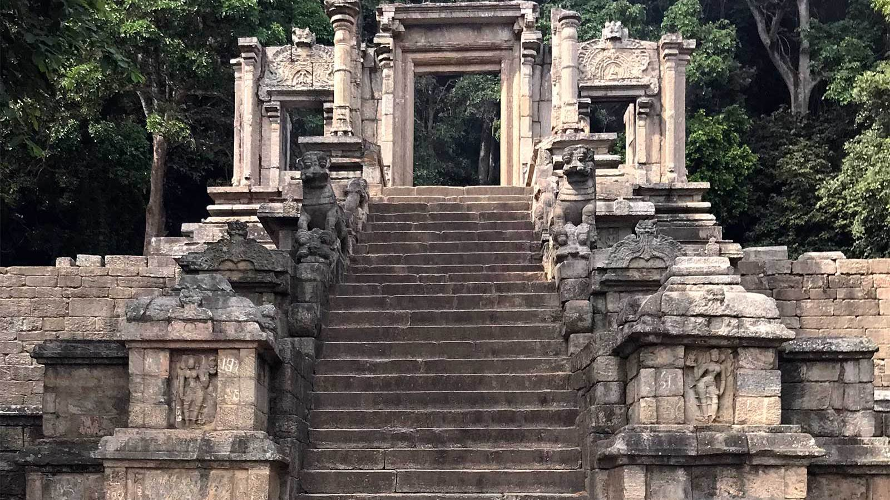
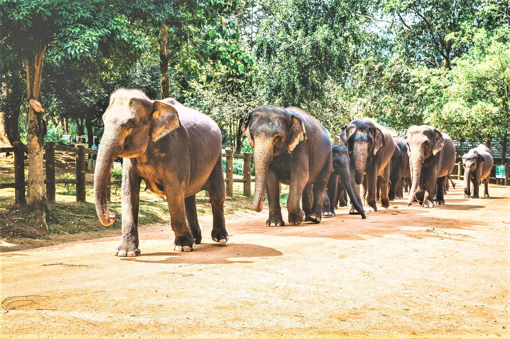

The Best Places to Travel in Sabaragamuwa Province...
|  |
Adam's Peak is a 2,243 m (7,359 ft) tall conical mountain range located in central Sri Lanka. It is well known for it Sri Pada (Sinhala: ශ්රී පාද), i.e., "holy footprint", a stone structure 1.8 m (5 ft 11 in) near the summit, which according to Buddhist tradition is considered to be the symbol of the Buddha's foot, according to the Hindu tradition of Hanuman or Shiva (Tamil: சிவனொளிபாதமலை, lit. 'Sivanolipaathamalai'), i.e., "Mountain of Shiva's Light", also other Islamic and Christian traditions of Adam, or St. Thomas.
|  |
Udawalawe National Park is a national park on the border of Sabaragamuwa and Uva Provinces in Sri Lanka. The park was created to provide a sanctuary for wildlife that was removed as a result of construction of the Udawalawe Reservoir on the Walawe River, and the protection of the catchment area in the lake. Storage space covers 30,821 hectares (119.00 sq mi) of land and was established on 30 June 1972. Prior to the designation of the national park, the area was used for farming (chena farming). Farmers were gradually removed once the park was announced. The park is 165 kilometers (103 mi) from Colombo. Udawalawe is an important destination for Sri Lankan waterfowl and elephants. It is a popular tourist destination and the third most visited park in the country.
|  |
Yapahuwa (Sinhalese language: යාපහුව) was one of the ephemeral capitals ancient Sri Lanka. The central Yapahuwa fort between Kurunagala and Anuradhapura is built around it a large boulder rock that rises almost 100 feet [100 m] above the surrounding ground. In 1272, King Bhuvenakabahu transferred the capital from Polonnaruwa to Yapahuwa in the presence of Dravidian. an attack from South India, bringing the Sacred Tooth Relic with him. This follows the death of King Bhuvenakabahu 284, the Pandyans of South India again invaded Sri Lanka, and succeeded in capturing the Sacred Tooth Relic. After its capture, Yapahuwa was largely abandoned and occupied by Buddhist monks and nuns.
|  |
Pinnawala Elephant Orphanage (Sinhala: පින්නවල අලි අනාථාගාරය), is an an orphanage, a crèche and a breeding ground for Asian wild elephants located in the Pinnawala valley, 13 km (8.1 mi) northeast of the city of Kegalle in the Province of Sabaragamuwa in Sri Lanka. Pinnawala is the largest a herd of captive elephants on earth. In 2011, there were 96 elephants, including 43 males and 68 females. from 3 generations, living in Pinnawala. This orphanage was established to care for and protect the many unsuspecting wild elephants found roaming about. in the forests and near Sri Lanka. It was established in 1975 by the Sri Lankan Department of Animal Welfare Conservation (DWC). On August 31, 2021, a 25-year-old elephant named Surangi gave birth to twin baby twins orphanage. It also marked the first birth of twin elephants in Sri Lanka after a an 80-year gap since 1941.